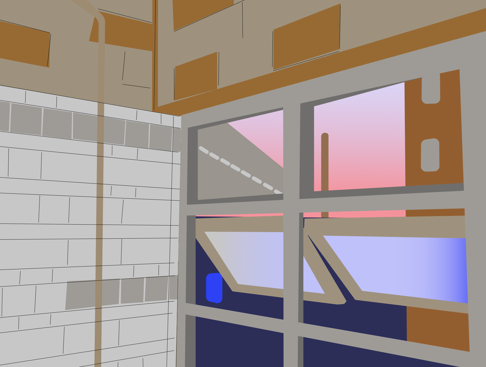

This is my homework 7.
Original image:

Drawing:
I live off of Myrtle-Wyckoff and am often finding the train station and its surroundings to be quite visually interesting and beautiful. I am very attracted to signage and text, so the local businesses and graffiti are both really enticing to me. On this particular night, there was a really beautiful sunset which I thought looked really nice through the view of the window. With the sterile lights inside the station and the colors of the tile, the sunset felt a little out of place but in a way that made sense to me. Using mostly the square shape tool, I traced out the different layers of the view but made the colors a little lighter and more cohesive.
Home